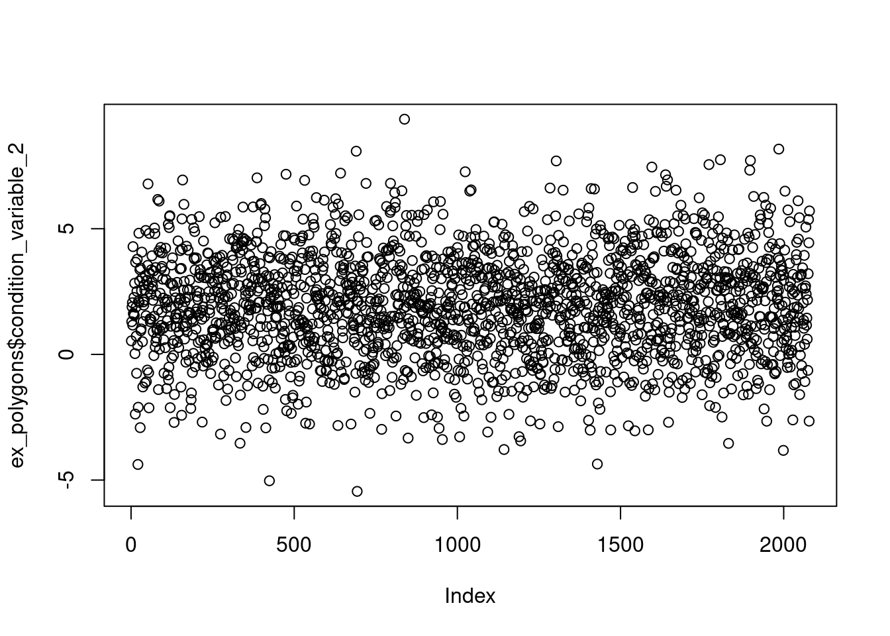

Normalise condition variable
normalise-condition-variable.RmdIntroduction
This article explains the use the ea_normalise(). Use this function to normalise (also called rescale) condition variables based on defined reference levels (also called reference values).
Let’s get some example data.
This is an sf object with 2079 rows (i.e. polygons). The column condition_variable_2 contains a dummy variable which we will take to be in raw units (e.g. kg or km).
plot(ex_polygons$condition_variable_2)
We want to normalise this variable to become bound by 0 and 1.
Plotting the results
It is helpful to visualise the transformation to make sure the function is doing what you expect of it (Fig. 1). Use plot = T to do this.
eaTools::ea_normalise(data = ex_polygons,
vector = "condition_variable_2",
upper_reference_level = 7,
plot = T)Figure 1: Visualising the results of normalising and linear scaling of condition_variable_2 using an defined upper reference level and a default lower reference level of zero
This is in a way the default method with linear scaling between the upper and lower reference levels, and indicator values truncated above 1 and below 0. We can also add a break point (Fig. 2). The break point is the value of the condition variable which will become scaled to 0.6 (the threshold used to define good ecological condition in some contexts).
eaTools::ea_normalise(data = ex_polygons,
vector = "condition_variable_2",
upper_reference_level = 7,
break_point = 5,
plot = T)Figure 2: Visualising the results of normalising and linear break-point scaling of condition_variable_2 using an defined upper reference level and a default lower reference level of zero
We can do a two-sided normalisation by defining an optimum value (Fig. 3). Note that this is non-compatible with defining a break-point.
eaTools::ea_normalise(data = ex_polygons,
vector = "condition_variable_2",
upper_reference_level = 7,
optimum = 5,
plot = T)Figure 3: Visualising the results of doing a two-sided normalising of condition_variable_2 using an defined upper reference level and a default lower reference level of zero
We also have the option of doing scaling the condition variable using a sigmoid function (Fig. 4), and a positive (Fig. 6) or negative (Fig. 5) exponential function. The latter two are non-compatible with a defined break-point, but the first one is.
eaTools::ea_normalise(data = ex_polygons,
vector = "condition_variable_2",
upper_reference_level = 7,
scaling_function = "sigmoid",
plot = T)Figure 4: Visualising the results of doing a normalising and sigmoid transformation of condition_variable_2 using an defined upper reference level and a default lower reference level of zero
eaTools::ea_normalise(data = ex_polygons,
vector = "condition_variable_2",
upper_reference_level = 7,
scaling_function = "exponential convex",
plot = T)Figure 5: Visualising the results of doing a normalising and negative exponensial transformation of condition_variable_2 using an defined upper reference level and a default lower reference level of zero
eaTools::ea_normalise(data = ex_polygons,
vector = "condition_variable_2",
upper_reference_level = 7,
scaling_function = "exponential concave",
plot = T)Figure 6: Visualising the results of doing a normalising and positive exponensial transformation of condition_variable_2 using an defined upper reference level and a default lower reference level of zero
If a higher variable value translates into a lower ecosystem condition, then we say that the directional is negative. In these case you should use reverse=TRUE. The upper and lower reference points shold still reflect the highest and lowest limit values of the unscaled variable.
eaTools::ea_normalise(data = ex_polygons,
vector = "condition_variable_2",
upper_reference_level = 7,
lower_reference_level = -1,
break_point = 5,
reverse=T,
plot = T)Figure 7: Visualising the results of normalising and linear break-point scaling of condition_variable_2 using an defined upper and lower reference level and specifying a negative indicator direction.
Export values
When you’ve found the correct settings for your normalisation, you can export the new values like this.
ex_polygons$condition_indicator_2 <- eaTools::ea_normalise(data = ex_polygons,
vector = "condition_variable_2",
upper_reference_level = 7)